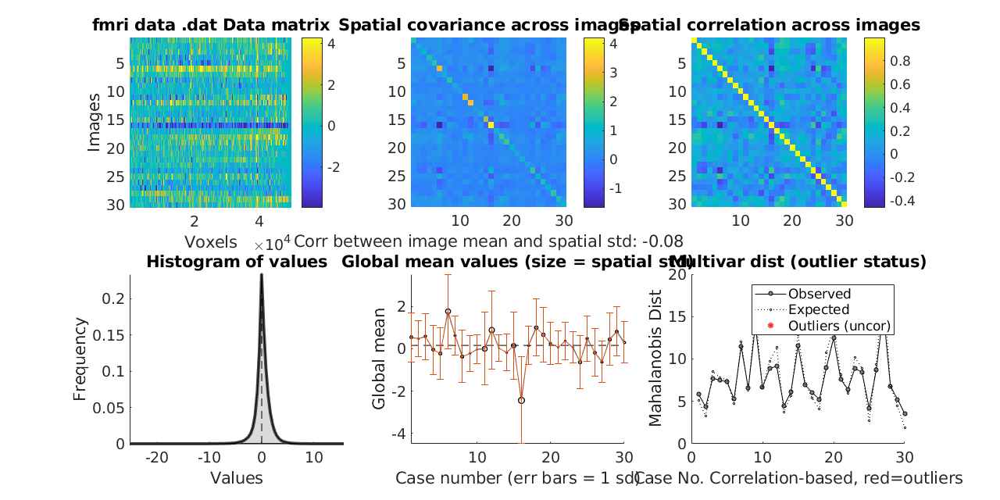
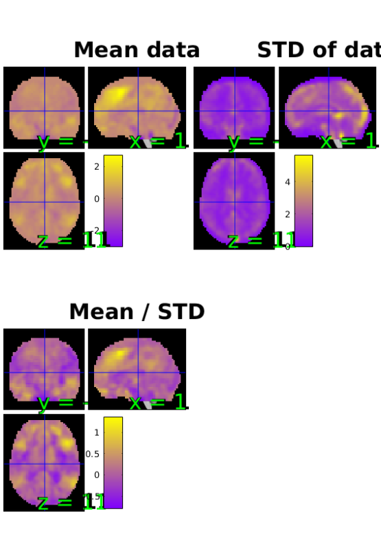

Using the Plot Function
The fmri_data/plot function is unique to the Can Lab toolbox and adds fMRI specific functionality on top of Matlab's built-in plot() method.
The method takes an fMRI data object as a parameter and produces an SPM Orthview presentation along with 5 plots of the data.
Contents
Dependencies
Matlab statistics toolbox, Matlab signal processing toolbox, Statistical Parametric Mapping (SPM) software https://www.fil.ion.ucl.ac.uk/spm/
For full functionality, the full suite of CANlab toolboxes is recommended. See here: Installing Tools
About This Dataset
The example uses the emotion regulation data provided with CANlab_Core_Tools. This dataset consists of a set of contrast images for 30 subjects from a first level analysis. The contrast is [reappraise neg vs. look neg], reappraisal of negative images vs. looking at matched negative images.
These data were published in: Wager, T. D., Davidson, M. L., Hughes, B. L., Lindquist, M. A., Ochsner, K. N.. (2008). Prefrontal-subcortical pathways mediating successful emotion regulation. Neuron, 59, 1037-50.
Using plot()
% The plot method expects an fMRI data object to be passed in. We can % create an fMRI data object using the emotion regulation dataset % via the following code: [image_obj, networknames, imagenames] = load_image_set('emotionreg'); % Once created, we can pass this data object to the plot function to get % the entire set of outputs, including Matlab console output regarding % outliers and corresponding data visualizations, using the simple command: plot(image_obj);
Loaded images:
/home/lukie/Documents/wager_code/CanlabCore/CanlabCore/Sample_datasets/Wager_et_al_2008_Neuron_EmotionReg/Wager_2008_emo_reg_vs_look_neg_contrast_images.nii
/home/lukie/Documents/wager_code/CanlabCore/CanlabCore/Sample_datasets/Wager_et_al_2008_Neuron_EmotionReg/Wager_2008_emo_reg_vs_look_neg_contrast_images.nii
/home/lukie/Documents/wager_code/CanlabCore/CanlabCore/Sample_datasets/Wager_et_al_2008_Neuron_EmotionReg/Wager_2008_emo_reg_vs_look_neg_contrast_images.nii
/home/lukie/Documents/wager_code/CanlabCore/CanlabCore/Sample_datasets/Wager_et_al_2008_Neuron_EmotionReg/Wager_2008_emo_reg_vs_look_neg_contrast_images.nii
/home/lukie/Documents/wager_code/CanlabCore/CanlabCore/Sample_datasets/Wager_et_al_2008_Neuron_EmotionReg/Wager_2008_emo_reg_vs_look_neg_contrast_images.nii
/home/lukie/Documents/wager_code/CanlabCore/CanlabCore/Sample_datasets/Wager_et_al_2008_Neuron_EmotionReg/Wager_2008_emo_reg_vs_look_neg_contrast_images.nii
/home/lukie/Documents/wager_code/CanlabCore/CanlabCore/Sample_datasets/Wager_et_al_2008_Neuron_EmotionReg/Wager_2008_emo_reg_vs_look_neg_contrast_images.nii
/home/lukie/Documents/wager_code/CanlabCore/CanlabCore/Sample_datasets/Wager_et_al_2008_Neuron_EmotionReg/Wager_2008_emo_reg_vs_look_neg_contrast_images.nii
/home/lukie/Documents/wager_code/CanlabCore/CanlabCore/Sample_datasets/Wager_et_al_2008_Neuron_EmotionReg/Wager_2008_emo_reg_vs_look_neg_contrast_images.nii
/home/lukie/Documents/wager_code/CanlabCore/CanlabCore/Sample_datasets/Wager_et_al_2008_Neuron_EmotionReg/Wager_2008_emo_reg_vs_look_neg_contrast_images.nii
/home/lukie/Documents/wager_code/CanlabCore/CanlabCore/Sample_datasets/Wager_et_al_2008_Neuron_EmotionReg/Wager_2008_emo_reg_vs_look_neg_contrast_images.nii
/home/lukie/Documents/wager_code/CanlabCore/CanlabCore/Sample_datasets/Wager_et_al_2008_Neuron_EmotionReg/Wager_2008_emo_reg_vs_look_neg_contrast_images.nii
/home/lukie/Documents/wager_code/CanlabCore/CanlabCore/Sample_datasets/Wager_et_al_2008_Neuron_EmotionReg/Wager_2008_emo_reg_vs_look_neg_contrast_images.nii
/home/lukie/Documents/wager_code/CanlabCore/CanlabCore/Sample_datasets/Wager_et_al_2008_Neuron_EmotionReg/Wager_2008_emo_reg_vs_look_neg_contrast_images.nii
/home/lukie/Documents/wager_code/CanlabCore/CanlabCore/Sample_datasets/Wager_et_al_2008_Neuron_EmotionReg/Wager_2008_emo_reg_vs_look_neg_contrast_images.nii
/home/lukie/Documents/wager_code/CanlabCore/CanlabCore/Sample_datasets/Wager_et_al_2008_Neuron_EmotionReg/Wager_2008_emo_reg_vs_look_neg_contrast_images.nii
/home/lukie/Documents/wager_code/CanlabCore/CanlabCore/Sample_datasets/Wager_et_al_2008_Neuron_EmotionReg/Wager_2008_emo_reg_vs_look_neg_contrast_images.nii
/home/lukie/Documents/wager_code/CanlabCore/CanlabCore/Sample_datasets/Wager_et_al_2008_Neuron_EmotionReg/Wager_2008_emo_reg_vs_look_neg_contrast_images.nii
/home/lukie/Documents/wager_code/CanlabCore/CanlabCore/Sample_datasets/Wager_et_al_2008_Neuron_EmotionReg/Wager_2008_emo_reg_vs_look_neg_contrast_images.nii
/home/lukie/Documents/wager_code/CanlabCore/CanlabCore/Sample_datasets/Wager_et_al_2008_Neuron_EmotionReg/Wager_2008_emo_reg_vs_look_neg_contrast_images.nii
/home/lukie/Documents/wager_code/CanlabCore/CanlabCore/Sample_datasets/Wager_et_al_2008_Neuron_EmotionReg/Wager_2008_emo_reg_vs_look_neg_contrast_images.nii
/home/lukie/Documents/wager_code/CanlabCore/CanlabCore/Sample_datasets/Wager_et_al_2008_Neuron_EmotionReg/Wager_2008_emo_reg_vs_look_neg_contrast_images.nii
/home/lukie/Documents/wager_code/CanlabCore/CanlabCore/Sample_datasets/Wager_et_al_2008_Neuron_EmotionReg/Wager_2008_emo_reg_vs_look_neg_contrast_images.nii
/home/lukie/Documents/wager_code/CanlabCore/CanlabCore/Sample_datasets/Wager_et_al_2008_Neuron_EmotionReg/Wager_2008_emo_reg_vs_look_neg_contrast_images.nii
/home/lukie/Documents/wager_code/CanlabCore/CanlabCore/Sample_datasets/Wager_et_al_2008_Neuron_EmotionReg/Wager_2008_emo_reg_vs_look_neg_contrast_images.nii
/home/lukie/Documents/wager_code/CanlabCore/CanlabCore/Sample_datasets/Wager_et_al_2008_Neuron_EmotionReg/Wager_2008_emo_reg_vs_look_neg_contrast_images.nii
/home/lukie/Documents/wager_code/CanlabCore/CanlabCore/Sample_datasets/Wager_et_al_2008_Neuron_EmotionReg/Wager_2008_emo_reg_vs_look_neg_contrast_images.nii
/home/lukie/Documents/wager_code/CanlabCore/CanlabCore/Sample_datasets/Wager_et_al_2008_Neuron_EmotionReg/Wager_2008_emo_reg_vs_look_neg_contrast_images.nii
/home/lukie/Documents/wager_code/CanlabCore/CanlabCore/Sample_datasets/Wager_et_al_2008_Neuron_EmotionReg/Wager_2008_emo_reg_vs_look_neg_contrast_images.nii
/home/lukie/Documents/wager_code/CanlabCore/CanlabCore/Sample_datasets/Wager_et_al_2008_Neuron_EmotionReg/Wager_2008_emo_reg_vs_look_neg_contrast_images.nii
Retained 8 components for mahalanobis distance
Expected 50% of points within 50% normal ellipsoid, found 46.67%
Expected 1.50 outside 95% ellipsoid, found 1
Potential outliers based on mahalanobis distance:
Bonferroni corrected: 0 images Cases
Uncorrected: 1 images Cases 27
Outliers:
Outliers after p-value correction:
Image numbers:
Image numbers, uncorrected: 27
Warning: Ignoring extra legend entries.
SPM12: spm_check_registration (v6245) 16:50:37 - 10/09/2018
========================================================================
Display <a href="matlab:spm_image('display','/home/lukie/Documents/wager_code/CanlabCore/CanlabCore/canlab_canonical_brains/Canonical_brains_surfaces/keuken_2014_enhanced_for_underlay.img,1');">/home/lukie/Documents/wager_code/CanlabCore/CanlabCore/canlab_canonical_brains/Canonical_brains_surfaces/keuken_2014_enhanced_for_underlay.img,1</a>
(<a href="matlab:spm_check_registration('/home/lukie/Documents/wager_code/CanlabCore/CanlabCore/canlab_canonical_brains/Canonical_brains_surfaces/keuken_2014_enhanced_for_underlay.img,1','/home/lukie/Documents/wager_code/CanlabCore/CanlabCore/canlab_canonical_brains/Canonical_brains_surfaces/keuken_2014_enhanced_for_underlay.img,1','/home/lukie/Documents/wager_code/CanlabCore/CanlabCore/canlab_canonical_brains/Canonical_brains_surfaces/keuken_2014_enhanced_for_underlay.img,1');">all</a>) <a href="matlab:spm_image('display','/home/lukie/Documents/wager_code/CanlabCore/CanlabCore/canlab_canonical_brains/Canonical_brains_surfaces/keuken_2014_enhanced_for_underlay.img,1');">/home/lukie/Documents/wager_code/CanlabCore/CanlabCore/canlab_canonical_brains/Canonical_brains_surfaces/keuken_2014_enhanced_for_underlay.img,1</a>
<a href="matlab:spm_image('display','/home/lukie/Documents/wager_code/CanlabCore/CanlabCore/canlab_canonical_brains/Canonical_brains_surfaces/keuken_2014_enhanced_for_underlay.img,1');">/home/lukie/Documents/wager_code/CanlabCore/CanlabCore/canlab_canonical_brains/Canonical_brains_surfaces/keuken_2014_enhanced_for_underlay.img,1</a>
Warning: Function vecnorm has the same name as a MATLAB builtin. We suggest you
rename the function to avoid a potential name conflict.
  Explanation of Output
1.) Data Matrix (Top Left): This plot shows each image by its constituent voxels. It shows the whole space of the dataset. Here you can look for images that are bright or dark across the image, which would indicate a global shift in values. This is often some type of large artifact. Most datasets have these from time to time. This plot shows how similar the images are to one another. This plot can also show that the rise and fall in one row may be different than another, highlighting a difference in scale. Lastly, the range shown in the color bar on the right side of this plot will be quite large if there are large outliers in the data. The units are in contrast unit values, but it is important to check if a few extreme values are forcing all other values to be in the middle of the scale. In this case, there will be very little color variation in the plot, which is a red flag indicating outliers.
2./3.) Covariance and Correlation Matrices (Top Middle/Top Left): These plots both show similarity across images. Both should show bright main diagonals and off-diagonals that are non zero or generally positive, depending on the dataset.
(2)The Covariance Matrix shows whether the variances of each image are equal. If the variances are all of approximately the same scale, the diagonal will be a single color. Anything that is bright has higher than average variance.
(3)The Correlation Matrix scales the variances of the images to one. This plot shows the correlation between each image and the others. Now, the main diagonal will always be one because each image is perfectly correlated to itself. The off-diagonals should be positive if the images are similar to one another, which we see here.
4.) This is a basic histogram (Bottom Left) of contrast values. It is expected that a distribution of contrast values will have roughly mean 0 as seen in this example. There are other tools for looking at this distribution for each individual in the dataset. This can be found here under Part 3: Examine the Brain Data
5.) The Global Mean Values (Bottom Middle) plot shows the global means across images. The means ought to be similar to one another. Ideally, these means will all be in a similar range. The error bars show one standard deviation. Here, what we see is that subject 16 is a standard deviation below the mean. This comports with plot 1 where we saw what looked like global deactivation across the voxels of subject 16. The dashed line in the middle is the global mean.
6.) Mahalanobis Distance (Bottom Right) is a measure of how far away each image is from the rest in the sample. The larger the distance, the more dissimilar it is from other images. Farther away is generally worse, but in any normally distributed dataset, there are going to be some values that lie farther out.
We assume that the points are distributed according to a chi-square distribution. The expected distance is based on multivariate normally distributed data for the percentile of the dataset that corresponds to each image. even the most extreme values may not be greater than what you expect by chance. The plot produces p-values, and any image that is marked as an outlier is one that exceeds the expected value with a p-value of less than 0.05. Those will be marked in darker red. Anything considered to be an outlier with p < 0.05 bonferroni corrected will be marked with an even darker red. The outliers from this plot are returned in the corresponding plot() output.
Note: The outliers returned in the Matlab console are not using the global shift in images in any way to determine outlier status. Outliers are currently determined only using Mahalanobis distance.
SPM Orthviews: These are the standard SPM orthviews. The X,Y, and Z coordinates correspond to the distance in millimeters from the set origin. The mean/STD plot is a simple estimate of effect size (Cohen's D) for every voxel. If a contrast with one image per person is passed to plot(), this plot gives you some idea of the effect size across the brain. It is reasonable to use this plot to look for distortions such as high values for means and mean/STDs in the ventricles.
Note that in the STD plot, if the dataset has alignment issues, rings will be visible around the outside of the images.